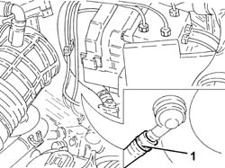
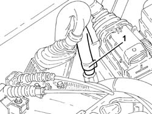
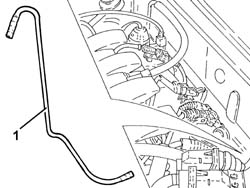
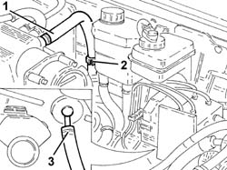
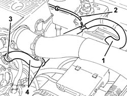
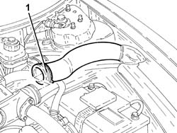
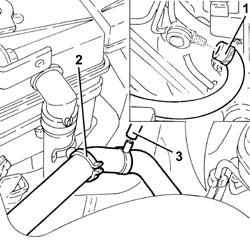
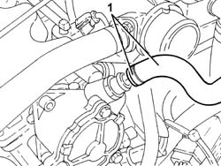

3330D24 vacuum pipe for brake servo - r+r
- Path
- Procedures > 33 BRAKING SYSTEM > 3330 HYDRAULIC BRAKING SYSTEM > 3330D brake vacuum system > 3330D24 vacuum pipe for brake servo - r+r
- Kind
- repair procedure (removal / refitting; the operation number is the code)
- Applies to
- all engines; all production periods
- Interactive page
- https://sloeber94.github.io/elrnDB-a156/en/#/3238079
Applies to: all engines; all production periods
 Removing
Removing
 Refitting
RefittingProceed with the removal 5530B10 battery - r+r .
Proceed with the removal 5530B52 Battery DRIP TRAY/SUPPORT - R.R. .
1. Disconnect the brake servo vacuum pipe from the brake servo single-acting valve.

Applies to: all engines; all production periods
1. Loosen the band and disconnect the brake servo vacuum pipe from the intake manifold.

Applies to: all engines; all production periods
1. Release the brake servo vacuum pipe from the fastenings and remove it.

Applies to: all engines; all production periods
Refitting
RemovingPlace the vacuum pipe for the brake servo back in its housing and connect it.
Proceed with the refitting 5530B52 Battery DRIP TRAY/SUPPORT - R.R. .
Proceed with the refitting 5530B10 battery - r+r .
Applies to: engines: 2.5 V6; all production periods
Removing
RefittingProceed with the removal 1048A34 sleeve(s) from flow meter to air supply capacity case - r + r .
Proceed with the removal 5530B10 battery - r+r .
Proceed with the removal 5530B52 Battery DRIP TRAY/SUPPORT - R.R. .
1. Disconnect the vacuum pipe for the brake servo from the air chamber.
2. Release the vacuum pipe for the brake servo from the retaining band.
3. Disconnect the brake servo vacuum pipe from the single-acting valve and remove.

Applies to: engines: 2.5 V6; all production periods
Refitting
RemovingPlace the vacuum pipe for the brake servo back in its housing and connect it to the single-acting valve.
Secure the vacuum pipe for the brake servo to the securing band.
Connect the vacuum pipe for the brake servo to the air chamber.
Proceed with the refitting 5530B52 Battery DRIP TRAY/SUPPORT - R.R. .
Proceed with the refitting 5530B10 battery - r+r .
Proceed with the refitting 1048A34 sleeve(s) from flow meter to air supply capacity case - r + r .
Applies to: engines: 1.9 JTD 8v ; all production periods
Removing
Refitting1. Disconnect the brake servo vacuum pipe from the brake servo single-acting valve.
2. Disconnect the E.G.R. system vacuum pipe from the brake servo vacuum pipe.
3. Loosen the band and disconnect the brake servo vacuum pipe from the vacuum unit.
4. Release the brake servo vacuum pipe from the fastenings and remove it.

Applies to: engines: 1.9 JTD 8v ; all production periods
Refitting
RemovingPlace the brake servo vacuum pipe back in its housing.
Connect the brake servo vacuum pipe to the vacuum unit and tighten the band.
Connect the E.G.R. system vacuum pipe to the brake servo vacuum pipe.
Connect the brake servo vacuum pipe to the single-acting valve.
Applies to: engines: 2.4 JTD 10v; all production periods
Removing
Refitting1. Loosen the band and disconnect the air supply hose from the heat exchanger to the inlet manifold side inlet manifold and move aside.

Applies to: engines: 2.4 JTD 10v; all production periods
Proceed with the removal 5530B10 battery - r+r .
Proceed with the removal 5530B52 Battery DRIP TRAY/SUPPORT - R.R. .
1. Disconnect the brake servo vacuum pipe from the brake servo single-acting valve.
2. Release the vacuum pipe for the brake servo from the fastenings.
3. Disconnect the E.G.R. system vacuum intake pipe from the brake servo vacuum pipe.

Applies to: engines: 2.4 JTD 10v; all production periods
1. Loosen the band and disconnect the brake servo vacuum pipe from the vacuum unit.

Applies to: engines: 2.4 JTD 10v; all production periods
Refitting
RemovingRefit the brake servo vacuum pipe, connect to the vacuum pump and tighten the band.
Connect the E.G.R. system vacuum intake pipe to the brake servo vacuum pipe.
Fix the vacuum pipe for the brake servo to the securing band.
Connect the brake servo vacuum pipe to the single-acting valve.
Proceed with the refitting 5530B52 Battery DRIP TRAY/SUPPORT - R.R. .
Proceed with the refitting 5530B10 battery - r+r .
Conect the air supply hose from the heat exchanger to the inlet manifold, inlet manifold side, and tighten the band.